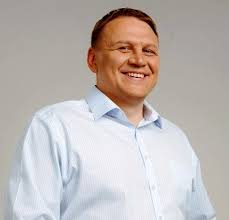

Кандидат у Президенти України Олекса́ндр Шевченко

підтримка : 0.57%
Oлександр Леонідович Шевченко (нар. 8 квітня 1971 року, Коломия Івано-Франківської області) —
український підприємець, громадський діяч, політик. Автор ідеї, засновник та колишній директор
гірськолижного курорту «Буковель». Нардеп України 7-го (2014) та 8-го скликань. Кандидат у
президенти України на виборах 2019 року.